방송통신산업기사 (2010-10-10 기출문제)
1과목: 디지털 전자회로
1. 그림과 같은 펄스 신호의 기본(반복) 주파수가 1[MHz]인 경우 충격계수(duty cycle)을 정한 경우 45[%]였다. 그림에서 τ의 값은 얼마인가?
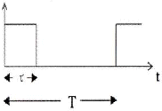
- 1[μs]
- 0.55[μs]
- 0.45[μs]
- 0.65[μs]
(정답률: 100%)

2. 다음의 궤환회로에서 무궤환시에 OP-AMP의 전압이득 2200, 입력저항은 2[MΩ], 출력저항이 40[Ω]일 때 궤환회로의 입력저항과 출력저항의 근사치는?
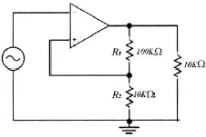
- 입력저항 400[MΩ], 출력저항 8[kΩ]
- 입력저항 400[MΩ], 출력저항 0.2[Ω]
- 입력저항 10[kΩ], 출력저항 8[kΩ]
- 입력저항 10[kΩ], 출력저항 0.2[Ω]
(정답률: 알수없음)
3. 다음 식과 같이 주어지는 논리식을 불대수를 적용하여 간략화한 것은?
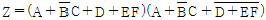
- Z=D+EF
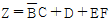
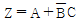
- Z=A+D
(정답률: 알수없음)
4. NPN bipolar 트랜지스터 증폭기 설명으로 틀린 것은?
- 에미터와 컬렉터 영역은 베이스 영역보다 불순물 농도가 대단히 낮게 도핑되어 있다.
- 베이스 영역은 에미터와 컬렉터 영역에 비해서 폭이 매우 얇다.
- 베이스-에미터 접합은 순방향 바이어스를 걸고 베이스-컬렉터 접합은 역방향 바이어스를 건다.
- 바이어스를 걸어주면 에미터 영역에 있는 자유전자가 베이스 영역으로 확산하여 베이스의 정공과 재결합하고 나머지는 컬렉터 단자의 강한 전계로 인해서 컬렉터 단자로 흘러간다.
(정답률: 알수없음)
5. RC 평활회로에서 시정수 RC=1이고 5[V]의 구형펄스를 입력했을 때, 커패시턴스의 방전시 파형으로 맞는 것은?
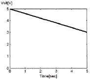
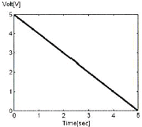
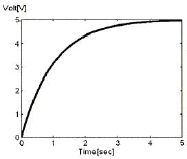
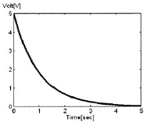
(정답률: 알수없음)
6. 다음 그림과 같은 A의 정현파 파형을 기준 레벨을 중심으로 B와 같은 디지털 신호로 바꾸고자 하는 경우에 사용되는 회로는 무엇인가?
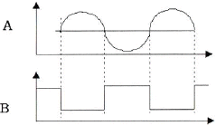
- 다이오드 펌핑 회로
- 슈미트 트리거 회로
- 디지털 펄스 발생 회로
- 블록킹 발진 회로
(정답률: 알수없음)
7. 다음의 회로 구성도로 동작하는 변복조 방식은 다음 중 어느 것인가?
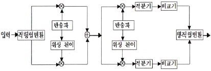
- 2-PSK
- QPSK
- 8-PSK
- OQPSK
(정답률: 알수없음)
8. 한 자리수의 2진수 A, B를 입력받아서 2개의 출력
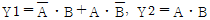
를 얻어내는 회로는 무엇이라고 하는가?- 전감산기
- 반감산기
- 반가산기
- 전가산기
(정답률: 알수없음)
9. 다음의 불대수(Boolean Algebra) 정리에서 틀린 것은 어느 것인가? (여기서, *는 and, +는 or를 나타냄)
- A*1 = A
- A+1 = 1
- A+A*B = B
- A+0 = A
(정답률: 75%)
10. 다음 발진회로의 설명으로 틀린 것은?
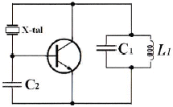
- 수정 진동자는 유도성으로 발진한다.
- Pierce-BC형 발진회로이다.
- 동조회로 LC의 공진주파수는 발진주파수보다 조금 높게 한다.
- 콜피츠 발진회로를 변형한 회로로 컬렉터와 베이스 사이에 수정진동자를 넣어 발진회로를 구성한다.
(정답률: 알수없음)
11. 발진기의 발진조건으로 틀린 것은?
- 궤환회로가 있으며 정궤환으로 동작한다.
- 궤환회로에 의한 위상천이는 0도이다.
- 궤환회로를 포함한 폐루프 이득이 1이다.
- 초기 시동시에는 폐루프 이득이 1보다 작다.
(정답률: 알수없음)
12. 다음 차동증폭 회로에서 1번 입력에 정현파 신호 VS1를 인가했을 때 출력 VO1과 VO2의 파형으로 맞는 것은?
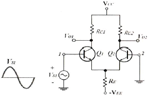
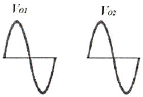
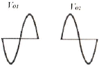
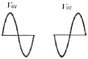
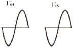
(정답률: 알수없음)
13. S-R 플립플롭에서 S, R의 입력과 과거 출력 Q(t)를 이용하여 현재 출력 Q(t+1)을 결정하는 식으로서 옳은 것은?
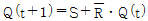
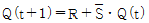
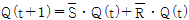
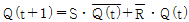
(정답률: 알수없음)
14. 위상 선행회로와 위상 지연회로를 궤환 회로로 사용한 발진기는?
- 콜피츠 발진기
- 윈브리지 발진기(Wien Bridge Oscillator)
- 위상천이 발진기(Phase Shift Oscillator)
- 클랩 발진기
(정답률: 34%)
15. 그레이 부호 1100을 10진수로 바르게 변환한 것은 다음 중 어느 것인가?
- 6
- 7
- 8
- 9
(정답률: 알수없음)
16. h-파라미터를 사용한 트랜지스터의 에미터 공통(CE) AC 등가회로에서 입력단 종속전원과 출력단 종속전원으로 맞는 것은? (여기서, b: Base, e: Emitter, c: Collector)
- hrevce, hfeib
- hievb, hfeib
- hrevce, hoevce
- hievb, hoevce
(정답률: 알수없음)
17. 5개의 플립프롭으로 구성되는 Up-counter에서 modulus는 몇 개인가?
- 8
- 16
- 32
- 64
(정답률: 알수없음)
18. 다음 그림은 베이스 바이어스 회로이다. 동작점에서 VCE 전압은? (단, 베이스에미터 전압 VBE = 0.7[V]이다.)
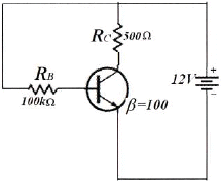
- 2.25[V]
- 6.35[V]
- 11.3[V]
- 12.0[V]
(정답률: 100%)
19. Ge 다이오드와 Si 다이오드를 비교한 내용으로 틀린 것은?
- 진성재료로서 Ge이 Si보다 1[cm2 ]당 자유전자의 개수가 적다.
- Si 다이오드에 대한 정격전압은 약 1000[V]이고 Ge 다이오드에 대한 정격전압은 약 400[V]이다.
- Si 다이오드는 온도정격은 약 200[℃]이고, Ge 다이오드의 온도정격은 약 100[℃]이다.
- Si 다이오드의 문턱전압은 0.7[V]이고, Ge 다이오드인 경우는 0.3[V]이다.
(정답률: 알수없음)
20. 다음 중 아날로그 진폭 변조 방식의 종류가 아닌 것은?
- DSB-LC(DSB-TC)
- DSB-SC
- FM
- SSB
(정답률: 알수없음)
2과목: 방송통신 기기
21. 다음 중 저궤도위성을 사용하는 이리듐, 글로벌스타와 같은 위성의 지구상 고도 범위로 적합한 것은?
- 300~1,500[km]
- 1,500~3,000[km]
- 3,000~5,000[km]
- 5,000~10,000[km]
(정답률: 알수없음)
22. 다음 중 아날로그 NTSC TV 전송방식으로 옳은 것은?
- LSB
- SSB
- DSB
- VSB
(정답률: 알수없음)
23. 전송중계 케이블의 신호전압 및 잡음전압이 각각 100[V]와 0.1[V]이다. 신호대잡음비는 몇 [dB] 인가?
- 10[dB]
- 20[dB]
- 30[dB]
- 60[dB]
(정답률: 70%)
24. 다음 중 광범위한 지역을 대상으로 방송하는 경우 사용하는 안테나는?
- 다이폴 안테나
- 루프 안테나
- 헤릴컬 안테나
- 무지향성 안테나
(정답률: 알수없음)
25. 국내 위성통신에서 사용되는 방송용 Up Link의 주파수 대역은?
- 14.5~14.8[GHz]
- 12.25~12.75[GHz]
- 11.7~12.0[GHz]
- 10.5~10.8[GHz]
(정답률: 알수없음)
26. 국내의 FM 송신 안테나에 관한 설명 중 틀린 것은?
- 88[MHz]~108[MHz]의 주파수 대역을 사용한다.
- 서비스 지역의 지형이나 대상에 따라 원편파나 직선편파를 사용한다.
- 소전력용으로는 야기 안테나를 사용한다.
- 주로 무지향성의 다이폴 안테나를 사용한다.
(정답률: 90%)
27. 진폭변조 회로에서 반송파 전력이 100[W]일 때 변조율이 60[%]일 경우 상측파대의 전력은 몇 [W] 인가?
- 6[W]
- 7[W]
- 8[W]
- 9[W]
(정답률: 알수없음)
28. 다음 중 비디오 조명으로 적합하지 않은 것은?
- 플리커(flicker)가 있어야 한다.
- 밝기가 첪분하고 일정해야 한다.
- 색 표현성이 좋아야 한다.
- 수명이 길어야 한다.
(정답률: 알수없음)
29. 다음 중 웨이브폼 모니터로 측정이 가능한 것은?
- 색도신호의 위상
- 색도신호의 지연왜곡
- 수평동기펄스
- TV 신호의 주파수
(정답률: 알수없음)
30. FM 송신기에서 S/N 비를 개선하기 위하여 신호의 고역 주파수 부분을 강조하는 것은?
- AFC
- Pre-emphasis
- De-emphasis
- Limiter
(정답률: 92%)
31. 다음 중 NTSC 방식에서 컬러 TV의 색부반송파 주파수는 약 얼마인가?
- 4.58[MHz]
- 3.58[MHz]
- 2.58[MHz]
- 1.58[MHz]
(정답률: 알수없음)
32. 다음 중 디지털 변조방식이 아닌 것은?
- ASK
- FSK
- QAM
- AM
(정답률: 알수없음)
33. 인물상 등을 다른 화상에 끼어 넣는 화면 합성기술과 가장 관련 깊은 것은?
- 크로마 키
- 이펙트 키
- 출력 키
- 새도우 키
(정답률: 알수없음)
34. TV 색신호의 위상을 측정하는 장비는?
- 벡터스코프(vector scope)
- 웨이브폼 모니터(waveform monitor)
- 스펙트럼 분석기(spectrum analyzer)
- TV 신호 측정기(TV signal meter)
(정답률: 알수없음)
35. CATV의 광섬유 케이블 중계 전송 방식에서 사용하지 않는 전송방식은?
- 아날로그 광 전송방식
- 디지털 광 전송방식
- 파장분할 다중 방식
- LOW-CH 방식
(정답률: 73%)
36. NTSC TV 방송시스템에서 영상신호의 크기는?
- 1[Vp-p]
- 2[Vp-p]
- 3[Vp-p]
- 4[Vp-p]
(정답률: 알수없음)
37. TV NTSC 방송 신호변조에 대한 설명으로 잘 설명한 것은?
- 영상신호와 음성신호 모두 진폭변조를 한다.
- 영상신호와 음성신호 모두 주파수변조를 한다.
- 영상신호는 주파수변조를 하고, 음성신호는 진폭변조를 한다.
- 영상신호는 진폭변조를 하고, 음성신호는 주파수변조를 한다.
(정답률: 90%)
38. 현재 NTSC 텔레비전 방송 방식에서 사용하는 음성과 영상을 포함한 방송 주파수 대역폭은 몇 [MHz]인가?
- 3[MHz]
- 4[MHz]
- 5[MHz]
- 6[MHz]
(정답률: 알수없음)
39. 다음 중 위성방송에서 송수신을 위한 지구국의 안테나로 가장 적합한 것은?
- 루프 안테나
- 야기 안테나
- 카세그레인 아테나
- 롬빅 안테나
(정답률: 알수없음)
40. AM 송신기의 출력이 10[W]인 경우 이것을 [dBm]으로 표시하면?
- 10[dBm]
- 30[dBm]
- 40[dBm]
- 50[dBm]
(정답률: 알수없음)
3과목: 방송미디어 개론
41. VOD 서비스 방식에서 플랫폼에 설치되어 있는 비디오 서버에서 시청하기를 원하는 콘텐츠를 이용자가 사전에 자신의 셋톱박스에 저장 후 원하는 시간에 이용할 수 있는 서비스 방식은?
- 스트리밍 방식
- 멀티캐스팅 방식
- 다운로드 플러그 방식
- 유니캐스팅 방식
(정답률: 70%)
42. 인터넷상의 데이터 전송 방식으로 뉴스나 증권정보와 같이 원하는 데이터를 일정한 주기나 특정한 이벤트 발생시 사용자의 컴퓨터로 자동으로 전달해주는 기술을 일반적으로 무엇이라 하는가?
- 푸시(push) 기술
- 스트리밍(streaming) 기술
- 캐스팅(casting) 기술
- 서버(server) 기술
(정답률: 알수없음)
43. MPEG은 영상신호 압축방식으로서 국제표준화되어 영상전송분야에 널리 적용되고 있다. 다음 중 HDTV 방송이나 디지털지상파 TV, DVD 등에 적용되는 것은?
- MPEG 1
- MPEG 2
- MPEG 3
- MPEG 4
(정답률: 알수없음)
44. 스튜디오에서 사용되는 HDTV 신호 즉, SMPTE-292M의 양자화 비트수가 10비트일 때, 총 전송 비트 레이트는 몇 [Mbps]인가?
- 1,185[Mbps]
- 1,285[Mbps]
- 1,385[Mbps]
- 1,485[Mbps]
(정답률: 알수없음)
45. 다음 미디어가 잘못 짝지어진 것은?
- 신문 - 인쇄미디어
- 전화 - 음향미디어
- TV - 멀티미디어
- Telegram - 영상미디어
(정답률: 알수없음)
46. 다음 멀티미디어 서비스 중 주로 협대역 통신망으로 구현되는 것은?
- 화상전화
- 대형화 텔레비전
- 원격의료
- 가상 박물관
(정답률: 알수없음)
47. 주파수 범위 300[MHz]~3,000[MHz]인 전파의 주파수대의 약칭은?
- MF
- HF
- VHF
- UHF
(정답률: 알수없음)
48. 다음 중 멀티미디어에 대한 설명으로 가장 적합한 것은?
- 뉴미디어 중에서 가장 고전적인 형태이다.
- 한 개의 미디어가 여러 개의 시스템에 적용되는 경우를 뜻한다.
- 기존 미디어의 기능을 더욱 효과적으로 세분화하여 사용한다.
- 지금까지 개발된 기존 미디어를 복합사용하는 형태로 나타난다.
(정답률: 알수없음)
49. TV 영상신호의 분석에 사용되는 waveform monitor의 기능이 아닌 것은?
- 영상신호를 140단계(IRE)로 나누어 표시하는 측정기
- 영상신호의 색상정보를 볼 수 있는 측정기
- 영상신호의 휘도 채도의 크기를 알 수 있는 측정기
- 영상화면이 너무 밝은지 어두운지를 알 수 있는 측정기
(정답률: 알수없음)
50. 다음의 방송송출 및 중계시스템 중에서 위성과 관련이 있는 것은 무엇인가?
- M/W
- STL
- TSL
- SNG
(정답률: 알수없음)
51. 다음 지상파 디지털 텔레비전 방송 규격에 대한 설명 중 잘못된 것은?
- ISDB-T는 일본규격으로 13개의 세그먼트로 구성되는 밴드 세그먼트 방식이다.
- DVB-T는 유럽규격으로 COFDM 변조방식을 사용한다.
- ATSC는 미국규격으로 DVB-T에 비해 이동수신이 용이한 방식이다.
- ATSC는 단일방송파 전송방식이며 DVB-T는 다중반송파 전송방식이다.
(정답률: 알수없음)
52. 다음 중 양자화를 바르게 설명한 것은?
- 원신호의 증폭
- 샘플링 주파수의 선정
- 샘플링된 신호를 디지털 양으로 표시
- 디지털 신호의 아날로그화
(정답률: 알수없음)
53. 디지털 HDTV 등과 같은 차세대 뉴미디어 TV 기술을 가능하게 한 핵심기술 요소가 아닌 것은?
- 조명 기술
- 고집적 반도체
- 영상 압축 기술
- 디지털 신호 처리 기술
(정답률: 알수없음)
54. 다음은 다중방송에 대한 설명이다. 틀린 것은?
- 현행의 주파수대역 또는 신호 전송시간의 여유분을 이용하여 부가정보를 현행의 방송과 동시에 행한다.
- TV 신호의 빈틈을 이용하여 기존 TV 방송의 음성신호에 음성을 하나 더 부가하는 방식을 TV 음성다중이라 한다.
- 다중방송의 종류는 TV 음성다중방송, AM 스테레오방송, FM 다중방송 등이 있다.
- 중파방송의 전파에 중첩하여 종래의 FM 방송과 별도로 음성신호나 문자신호 등을 방송하는 것을 FM 다중방송이라 한다.
(정답률: 알수없음)
55. 최고 주파수 20,000[Hz] 오디오를 10초간 저장하기 위해서 필요한 데이터량(바이트)은? (샘플링 주파수는 나이퀴스트 이론에 의한 최소주파수를 사용하며 A/D(아날로그-디지털) 변환기는 16비트이다.)
- 200[KB]
- 400[KB]
- 800[KB]
- 2[MB]
(정답률: 알수없음)
56. 우리나라 지상파 디지털방송(DTV) 방식에서 1라인 유효 화소수와 유효 라인은?
- 1440×1080i
- 1920×1080i
- 1280×1080i
- 720×480i
(정답률: 알수없음)
57. 다음 중 TV 부조정실의 임무와 거리가 먼 것은?
- 각종 드라마, 교양, 스포츠, 뉴스 등의 TV 프로그램들을 제작하여 녹화하거나 생방송을 하는 업무를 수행한다.
- 방송 프로그램을 제작함에 있어 정확한 시간관리, 최상의 품질상태 유지라는 원칙을 준수해야 한다.
- 부조정실의 통상적인 기술 스탭에는 기술감독, 비디오 엔지니어 등이 있으며 각자 프로그램 제작시 조화를 이루어야 한다.
- 방송 프로그램 신호에 부가되어 송출되는 부가정보에 대한 제어 및 조정, 관리 및 감시업무를 수행한다.
(정답률: 알수없음)
58. 영상압축 시스템 MPEG-2의 프레임별 특성에서 I 픽쳐(Intra Picture)를 옳게 설명한 것은?
- 예측 부호화 영상
- 프레임간 순방향 영상
- 쌍방향 예측부호화 영상
- 프레임 내에서의 부호화 영상
(정답률: 60%)
59. 우리나라 지상파 DMB(Digital Multimedia Broadcasting)에서 서비스하고 있는 표준 프로토콜의 하나로, 교통 및 여행정보를 제공하는 서비스는?
- RDS
- DARC
- TPEG
- telematics
(정답률: 알수없음)
60. 우리나라에서 디지털 텔레비전(ATSC) 전송 규격으로 사용하는 변조 방식은?
- 8VSB 방식
- OFDM 방식
- AM 방식
- FM 방식
(정답률: 알수없음)
4과목: 전자계산기 일반 및 방송설비기준
61. 디지털 지상파 텔레비전 방송에서 프로그램 채널에 관한 설명으로 적합하지 않은 것은?
- 프로그램 채널은 방송 서비스 채널과 데이터 서비스 채널이 있다.
- 방송 서비스 채널은 영상, 음성, 보조 데이터로 구성된다.
- 데이터 서비스 채널은 단일 스트림으로 구성된다.
- 프로그램 채널은 아날로그 방송 신호로만 구성된다.
(정답률: 알수없음)
62. 디지털 지상파 텔레비전 방송용 무선설비의 기술기준에서 변조된 신호의 채널당 주파수 대역폭은?
- 1[MHz]
- 4[MHz]
- 6[MHz]
- 12[MHz]
(정답률: 알수없음)
63. 8bit 마이크로프로세서의 특징이 아닌 것은?
- 한번에 처리하는 정보의 크기가 8bit임을 의미함
- 8bit로 CPU 내에 전송된 데이터는 8bit 크기의 레지스터에 저장함
- CPU 내의 여러 연산을 이용할 때 8bit의 크기로 이용함
- 대부분 데이터버스 크기는 8bit, 주소 버스 크기도 8bit를 가짐
(정답률: 알수없음)
64. 중앙처리장치의 효율을 극대화하는 방법으로 하나의 처리기에 둘 이상의 프로그램이 동시에 시뮬레이션하는 기법은 무엇인가?
- 멀티프로그래밍 방식
- 일괄처리 방식
- 분산처리 방식
- 온라인 처리 방식
(정답률: 알수없음)
65. 건축법에서 정하는 건축설비설치의 원칙에서 방송수신이 지장이 없도록 설치하는 설비에 해당되지 않는 것은?
- 공동시청 안테나
- 유선방송 수신시설
- 위성방송 수신시설
- 중파방송 수신신설
(정답률: 알수없음)
66. 마이크로프로세서의 병렬처리 방식 중에 pipeline에 대한 설명 중 잘못된 것은?
- 8088은 파이프라인 방식임
- 고도 병렬 처리를 통한 수행시간 단축
- CPU 처리 효율 증가, 자원 사용 극대화
- 동시수행가능 명령어를 컴파일 수준에서 하나로 압축
(정답률: 알수없음)
67. 커널을 메모리에 로드하여 실행하는 대신 플래시에서 직접 수행하는 기술은 임베디드 시스템의 제한된 메모리 자원을 극복하기 위해 이 기술이 등장하였다. 이 기술은 무엇인가?
- 부팅지원 기술
- XIP(eXecution-In-Place) 기술
- 저전력 지원 기술
- 자원관리 기술
(정답률: 알수없음)
68. 중계유선방송의 기술적 조건 중 타당하지 않는 것은?
- 수신공중선의 출력레벨은 VHF대에서 54[dBμV] 이상 이어야 한다.
- 영상신호 주파수대역 특성은 -0.5~4[MHz]에서 ±3[dB] 이내 이어야 한다.
- 영상반송파와 음성반송파간의 간격은 4.5[MHz]에서 ±2[kHz] 이내 이어야 한다.
- 채널간 영상반송파의 레벨차는 인접채널의 경우 10[dB] 이내 이어야 한다.
(정답률: 알수없음)
69. 전파법이 정하는 바에 따라, 지상파 방송사업을 하고자 하는 자는 어느 기관의 허가를 받아야 하는가?
- 전파관리소
- 방송사업위원회
- 방송통신위원회
- 방송문화원
(정답률: 알수없음)
70. 부동소수점 표현 방식 중 틀린 것은?
- 소수점의 위치가 한곳에 고정되어 있는 고정소수점 표현방식에 비해 부동소수점 표현방식은 소수점의 위치를 움직일 수 있도록 하였다.
- 부동소수점 데이터 표현은 일반적으로 BCD 코드가 널리 이용된다.
- 부동소수점 방식은 수의 표현에 대한 정밀도를 높일 수 있다는 장점이 있다.
- 부동소수점에 의한 표현은 부호 비트(sign bit), 지수 부분(exponent part), 가수 부분(mantissa part)으로 구분된다.
(정답률: 알수없음)
71. 다음 중 종합유선방송국의 채널 및 주파수대역에 있어서 음악방송의 대역은?
- 54[MHz] ~ 72[MHz]
- 72[MHz] ~ 88[MHz]
- 88[MHz] ~ 108[MHz]
- 88[MHz] ~ 168[MHz]
(정답률: 100%)
72. 어떤 메모리 워드 또는 어떤 레지스터가 피연산자가 아닌, 피연산자의 어드레스를 포함한 것을 지정해 주는 방식의 주소지정 방식은?
- 직접 어드레스 지정방식
- 인덱싱 어드레스 지정방식
- 간접 어드레스 지정방식
- 스텍 어드레스 지정방식
(정답률: 알수없음)
73. 종합유선방송사업의 정의에서 ( )에 알맞은 것은?
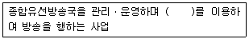
- 전송ㆍ통신설비
- 방송ㆍ선로설비
- 전송ㆍ선로설비
- 종합ㆍ방송설비
(정답률: 80%)
74. 기억장치의 계층구조 상에서 액세스 타임(속도)이 가장 빠른 것은 어느 것인가?
- 캐시의 기억장치
- CPU의 레지스터
- 주기억 장치
- 보조기억 장치
(정답률: 알수없음)
75. 다음의 컴퓨터 기본구조 중에서 해당되는 장치를 무엇이라 하는가?
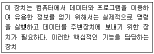
- 제어장치
- 중앙처리장치
- 입출력장치
- 보조기억장치
(정답률: 알수없음)
76. 종합유선방송에서 방해신호에 대한 영상반송파의 비율을 데시벨로 나타낸 것을 무엇이라 하는가?
- S/N
- C/N
- CTB
- D/U
(정답률: 알수없음)
77. 실제 CPU에서 처리되는 작업에서 수행하는 메모리 장치 접근에서 지나치게 페이지 폴트가 발생하여 프로세스 수행에 소요되는 시간보다 페이지 교한에 소요되는 시간이 더 커지는 현상은?
- 워킹 셋(Working set)
- 세마포어(Semaphore)
- 교환(Swapping)
- 스레싱(Thrashing)
(정답률: 55%)
78. 다음 중 출력장치에 해당하지 않는 것은?
- 광학문자 판독기(OCR)
- 종이테이프 천공기(paper tape punch)
- 카드 천공기(card punch)
- 프리트 장치(line printer)
(정답률: 알수없음)
79. RISC 마이크로프로세서의 특징을 잘못 설명한 것은?
- 명령어가 적으며 칩 설계가 쉽고 작음
- 필요한 모든 명령어 셋을 갖추도록 설계된 마이크로프로세서
- 적은 수의 명령 형식을 가짐
- 모든 명령어는 한 사이클에 수행되도록 설계됨
(정답률: 알수없음)
80. 텔레비전 공동시청안테나 시설에서 수신안테나 설치방법이다. 해당되지 않는 항은?
- 지상파 텔레비전 방송, 위상 방송 및 FM 라디오 방송의 신호를 수신할 수 있도록 안테나를 조합하여 설치하여야 한다.
- 2이상의 건축물이 하나의 단지를 구성하고 있는 경우에는 1조의 수신안테나를 설치하여 공동으로 사용할 수 있다.
- 수신안테나는 낙뢰로부터 보호될 수 있도록 설치하되, 30[cm] 이상의 거리를 두어야 한다.
- 수신안테나를 지지하는 구조물은 풍(風)하중을 견딜 수 있도록 견고하게 설치하여야 한다.
(정답률: 알수없음)